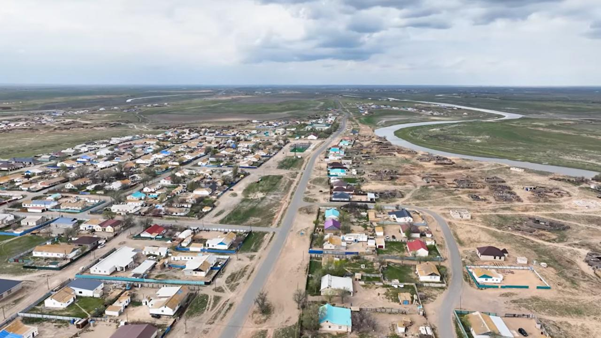
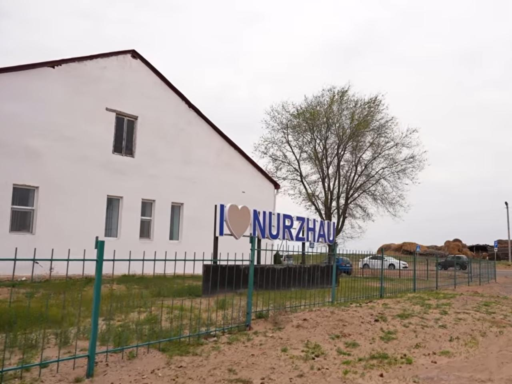
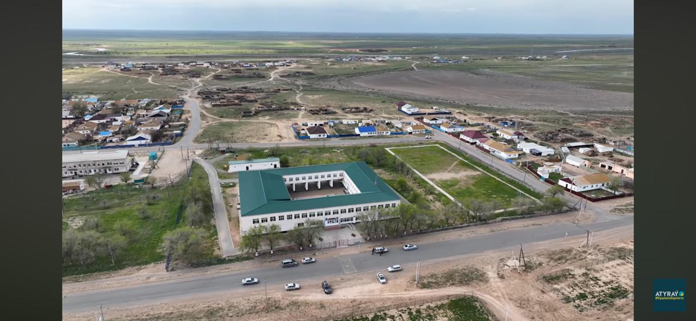
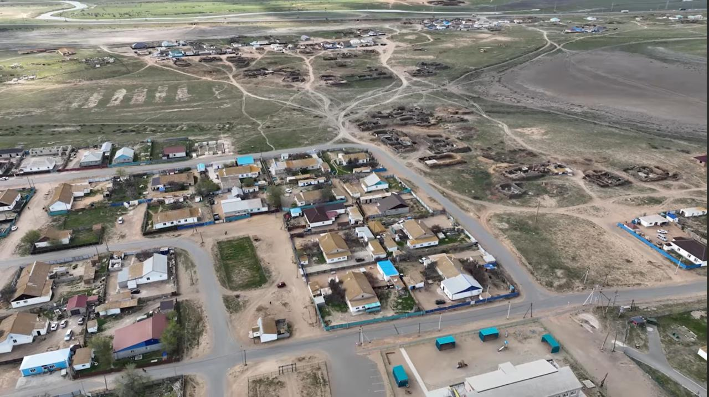
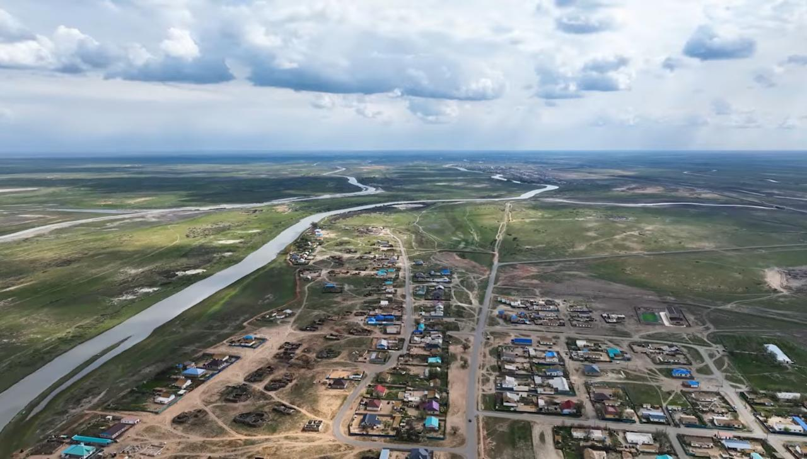
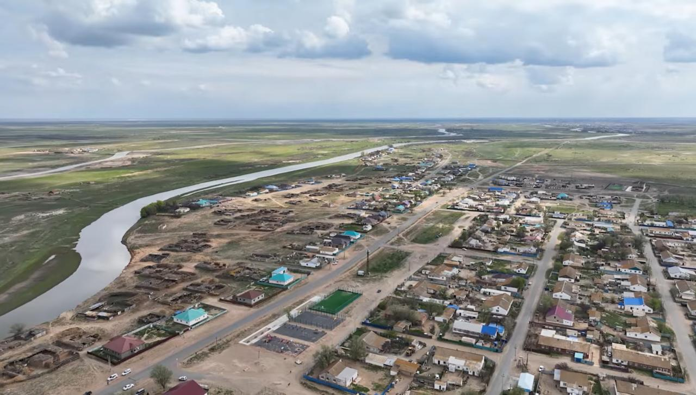

Мектеп бітіргендеріне 20 жыл толуына орай орнатылған
Мемлекеттік рәміздер кешені


Бұл нысан — 2006 жылғы мектеп түлектерінің (1989 жылы туған шәкірттердің) мектеп бітіргендеріне 20 жыл толуына орай туған жерге тартуы.
Кешеннің басты мақсаты — Қазақстан Республикасының Мемлекеттік Рәміздерін ұлықтау, кейінгі ұрпаққа патриоттық тәрбие беру мен елдік рухты дәріптеу және туған жерді сүю мен ауылға деген қадір-қасиетке толы құрметті арттыру.
Нысан Атырау облысы, Құрманғазы ауданы, Нұржау ауылдық округіндегі «Түлектер аллеясында» орналасқан.




1995 жылы Ленин атындағы орта мектептің (қазіргі Нұржау жалпы орта мектебі) табалдырығын 60-қа жуық оқушы аттады. Олар «А», «Б», «В» сыныптары бойынша білім алды. Бастауышта сынып жетекшілері мен ұстаздар болып, жас ұрпаққа білім нәрін беріп, тәлім-тәрбие жолында адал еңбек еткен ұстаздар:
Түлектер барлық ұстаздарға шексіз алғыс білдіреді. Ұстаз еңбегі — ұлт болашағын тәрбиелейтін қасиетті еңбек әрі абырой. Олардың елеулі еңбектері мен төккен терлерін тәлім алған шәкірттері, 2006 жылғы түлектер ешқашан ұмытпайды.
Өмірден өткен ардақты ұстаздардың рухына тағзым етіледі.
Бүгінде Нұржау — тарихы терең, бірлігі бекем, ұлттық құндылықтарды қастерлейтін қасиетті мекен.
Нұржау ауылдық округі шамамен 1922–1923 жылдары бұрынғы болыстық негізде құрылған. Алғашқы кеңес орталығы Шешеген аралында орналасқан.
Өткен ғасырда бұл өңірде «Қазақстан», «Коминтерн», «Жамбыл», «Жаңа талап» ұжымшарлары жұмыс жасады. Бұл ауылдан елге еңбегі сіңген балықшылар, ұстаздар, еңбек адамдары мен өнерпаздар шықты.
«Октябрь» кеңшары құрылып, ауыл қарқынды дами бастады. Тұрғын үйлер, мектептер, мәдениет және әлеуметтік нысандар салынды.
Ауылға газ, су және байланыс желілері тартылып, халықтың тұрмыс деңгейі жақсарды. Кейінгі жылдары асфальт жол төселіп, көшелер жарықтандырылды. Спорт кешені мен балалар ойын алаңдары салынып, ауыл келбеті жаңара түсті.
Мемлекеттік рәміздер — ел бірлігінің, тәуелсіздіктің және ұлттық рухтың символдары.
Қазақстан Республикасының Мемлекеттік Туы — бейбітшілік пен бірліктің белгісі. Аспан көк фоны мен алтын қыран тәуелсіздіктің символы.
Қазақстан Республикасының Мемлекеттік Елтаңбасы — елдің тұтастығы мен ортақ шаңырағын бейнелейді. Шаңырақ пен қыран — ұлт рәмізі.
Қазақстан Республикасының Мемлекеттік Әнұраны — Отанға деген сүйіспеншілік пен патриоттық рухтың символы.
46°36'09.32"N, 49°07'45.08"E
Нұржау ауылы, Атырау облысы